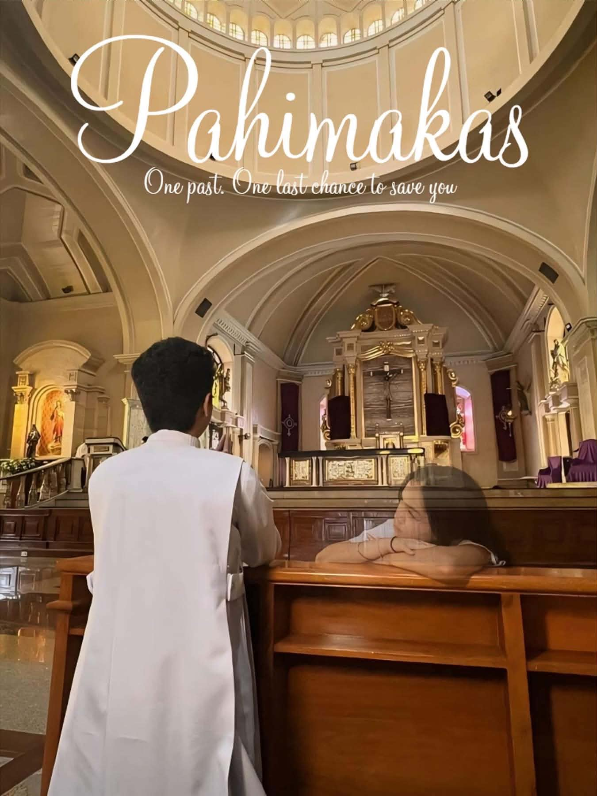

These are my projects from 2024 to 2026, where you can see my experience in acting, music creation, and other creative experiments. Through each of these projects, I have been able to gain experience and try something new. Thanks to this experience, I have managed to learn more about performance, music creation, and storytelling. All of these projects are evidence of my development as a multimedia artist and my interest in a creative career.
Pahimakas: Short Film (2024)

Promotional poster featuring Mark Lawrence Soriano and Briana Nicole Fule
The story follows the emotional arc of Zeive (played by Briana Nicole Fule) and Archie (played by Mark Lawrence Soriano), two childhood friends whose initial bond is abruptly interrupted when Archie's father, Alfred (played by Alvel Arcedera), relocates the family to Manila for work. During their years apart, both attempt to move on through new romantic relationships - Archie with Zandra (played by Christine Alejandre) in Manila and Zeive with Xavier (played by Roy Diongzon) at school in San Pablo. However, neither relationship succeeds: Zandra betrays Archie's trust by cheating, and Zeive realizes her feelings for Xavier are hollow because her heart has always belonged to Archie. Once their studies conclude, the pair finally reunite and rekindle their deep connection, hoping for a shared future. Unfortunately, Alfred strongly opposes their relationship, traumatized by Archie's past heartbreak and terrified that his son will be cheated on once again. Overwhelmed by his father's disapproval and emotional turmoil, Archie seeks counsel from his friend Nick (played by Nicolo Fernando) and ultimately decides to enter the seminary to pursue a quiet life of faith. Tragic fate strikes while Archie is away immersed in his religious studies, as Zeive secretly battles leukemia and succumbs to the illness. Upon discovering the tragic news, a heartbroken Archie visits Zeive's final resting place at the cemetery, mourning the love of his life and the tragic timing that kept them apart until the very end.
The title of my original story, which is called The Cosmics, is the story of three best friends—Mark, Josh, and Anna—who decide to create a band under the name The Cosmics out of their love for music. However, with fame comes jealousy, and the bandmates have to deal with Mark’s long-time bully, John, who tries to sabotage their progress through rumors and humiliation. The project is about Mark overcoming his fears, gaining his self-confidence, and defending his friends and the dream of the band. The pitch bible includes an introduction to the main characters and their traits, music-related items, and significant locations.